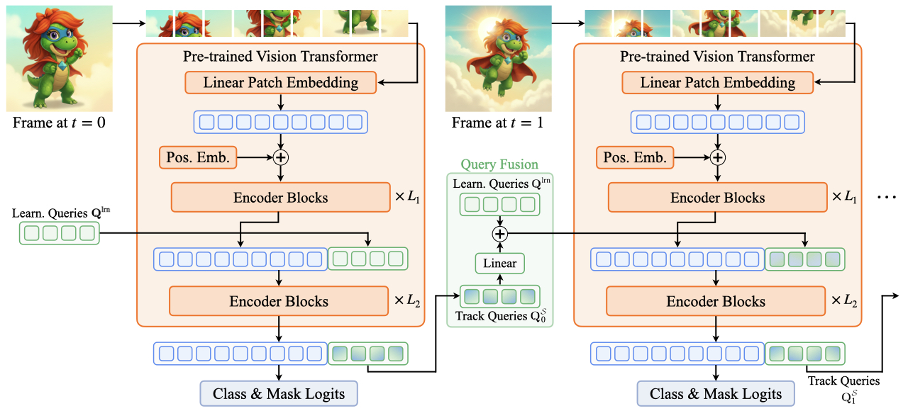

Overview
Existing online video segmentation models typically pair a per-frame segmenter with complex tracking modules, which increases architectural complexity and computational cost. We propose the Video Encoder-only Mask Transformer (VidEoMT), a simple encoder-only video segmentation model built on a plain ViT that removes the need for dedicated tracking modules.
VidEoMT performs temporal modeling via a lightweight query propagation mechanism that reuses queries from the previous frame and fuses them with a small set of temporally agnostic learned queries. This design achieves the benefits of tracking without extra overhead, reaching competitive accuracy while being 5x–10× faster and running at up to 160 FPS with a ViT-L backbone.
Video Encoder-only Mask Transformer (VidEoMT)
Citation
@article{Norouzi2026VidEoMT,
author = {Norouzi, Narges and Zulfikar, Idil and Cavagnero, Niccol\`{o} and Kerssies, Tommie and Leibe, Bastian and Dubbelman, Gijs and {de Geus}, Daan},
title = {{VidEoMT: Your ViT is Secretly Also a Video Segmentation Model}},
journal = {arxiv},
year = {2026},
}